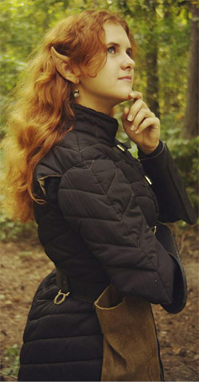
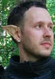
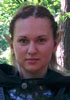
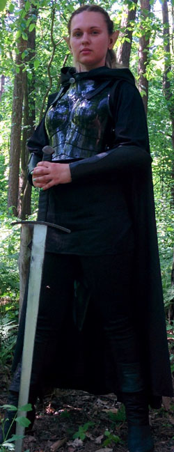

Личная страница Итиль
История Итиль
Итиль Рилинт’тар родилась в знатной семье города Мензоберранзана. Она получила свое дивное, не присущее дровскому обществу имя в час полной Луны. Мать Т’ерра это почувствовала, и далекие воспоминания о мире Поверхности захватили ее сознание. «Итиль…» – выдохнула она и провалилась в небытье так быстро, что не успела заметить негодующе-обозленного лица старшей дочери – верховной жрицы семейства. После она жалела о своем необдуманном поступке, но было слишком поздно. Богиня Ллос не любит подобные вещи, и она это прекрасно понимала.
Кроме Итиль у Матери Т’ерры была еще одна дочь, Микара, которая отдала свою долгую жизнь во служение темной богине и делала все возможное, чтоб остаться в милости Ллос. Рождение сестры радовало её сердце до тех пор, пока Верховная Мать не произнесла имя…
Последующие годы обучения проходили под крышей дома Рилинт’тар, и наставницей Итиль стала именно её сестра. Захваченная фанатическим желанием сделать из сестры истинную служительницу и таким образом укрепить свое положение, Микара в мельчайших деталях рассказывала ей о кровавом культе Ллос, законах дровского общества и мире Подземья, но эти рассказы не вызывали подобного восхищения у сестренки. Со временем они перешли к практическим занятим, где Итиль изучала основы магии, а также владение оружием. «Чтоб выжить, ты должна уметь все» –говорила сестра, время от времени подкрепляя свои слова ударами, и тогда в ее глазах вспыхивал огонь. Мать Т’ерра относилась к младшей дочери холодно и сдержанно, но за это Итиль была ей благодарна. Она часто сравнивала членов своей семьи и вскоре начала понимать, что сестра куда более злобная и уже давно желает повысить свое положение в семействе. Подобные мысли казались ей дикими, но тёмная эльфийка научилась доверять своей интуиции, а она как раз намекала о больших переменах в ближайшем времени.
В день совершеннолетия девушка проснулась взволнованная и напряжённая. Повсюду было тихо, поэтому она выскользнула в коридор и направилась прямо в покои Матери. Не застав ее на месте, Итиль решила обойти зал, разглядывая диковинные резные колонны и фигурки пауков. Неожиданно за одной из колонн возникла приоткрытая дверь, которой она раньше никогда не видела. Оттуда лилось мягкое зеленоватое свечение и слышались странные звуки. «Ты разгневала богиню. – услышала она, – Ещё тогда, дав ей имя. Ллос проявила огромное великодушие, не уничтожив тебя сразу после того похода на Поверхность, потому что ты подавала большие надежды. Но ты смогла утаить кое-что…» Послышались крики и звуки возни, Итиль распахнула дверь и увидела взбешённую сестру, а напротив – окровавленную Мать, прижимающую к груди потертый зеленый плащ. Всё бы ничего, но его владелец был не дроу, о чем гласили цвет и серебрянная фибула. «Убирайся! – зарычала Микара, – Теперь я здесь Верховная Мать!» При этом она вонзила ритуальный кинжал в грудь Т’ерры. Внезапно откуда-то изнаружи донесся взрыв, потом еще один, и из потолка начали осыпаться камни. Микара отшатнулась, и Итиль удалось подбежать к умирающей Матери. Она лишь протянула ей плащ, заглянула в полные слез глаза и со вздохом «Итиль…» отошла в мир иной.
Итиль плохо помнила, как выбралась из горящего дома, захватив с собой из оружия только легкий лук и кинжал. Не помнила она, как ей удалось пробраться через вражескую армию атакующего Дома, чьм заданием было уничтожить попавший в немилость Дом Рилинт’тар. Какие-то первобытные инстинкты гнали её вперед по тоннэлям Подземья, увлекая все дальше и дальше от дома, которого больше не существовало.
Очнулась Итиль на пятый день головокружительного бегства возле берега подземного озера. Она была слишком измождена многочасовым бегом и тем, что произошло, но всё-таки нашла в себе силы подползти к воде и напиться. Это придало ей сил, и взгляд тёмной эльфийки пал на скомканный плащ, покоившийся возле её оружия. Серебрянная фибула загадочно мерцала, отражая блики воды, и вдруг Итиль заметила небольшой ручей, впадавший в озеро. Подумав немного, она собрала свои вещи и двинулась вдоль берега. Часы блуждания в полумраке были изнурительными, но странное чувство подталкивало девушку вперед, будто подбадривая её. Она оставляла позади темную богиню своего народа, стремясь к чему-то новому и неведанному. Постепенно мрак начал рассеиваться, подуло холодным ветром и каменный свод подземелья резко оборвался, открывая взору эльфийки темно-синий глаз неба, где, как и тогда, много лет назад, светила полная Луна…
Эльфийка посмотрела на неё и вдруг поняла, что больше не боится. На душе стало тепло и спокойно, даже воспоминания о жестокой резне и погоне отступили перед лунным светом, который, как показалось Итиль, указывал ей дорогу куда-то в сторону горного хребта. Он грозно щетинился острыми скалами, но это не пугало девушку, наоборот - придавало ей уверенности. Она долго пробиралась темными узкими тропами, постоянно рискуя оступиться над пропастью, но Луна всегда освещала ей дорогу. Когда даже её врожденная дровская ловкость и выносливость начали подводить, а дрожь в ногах не позволяла сделать и пары шагов, подьем неожиданно закончился. Взору Итиль открылся вид на чудесную долину, где в нескольких местах поднимался дымок. Окончив крутой и опасный спуск, она увидела высокую фигуру, которая двигалась навстречу. «Добро пожаловать в королевство Вэльдрин!» - сказал воин-дров.
Они говорили всю дорогу, пока не дошли к поселению. Девушка поведала темному эльфу свою историю, и тот отвел её в чертоги Владыки. Она не переставала поражаться отличиям законов общины отступников от тех, которые действовали в её родном городе. После долгого разговора Владыка созвал совет, а через несколько дней ей сообщили о принятии в общину. И тогда Итиль поняла, что обретет здесь настоящий дом.
Личная страница Тэтана
История Тэтана
Раса – тёмный полу эльф
Дом Тэта – малоизвестный, обособленный дом дроу в глубинах Подземья, являющийся приверженцем культа Эйлистри. Название дома происходит от древнего не эльфийского языка, времён, когда тёмные эльфы ещё не ушли под землю. В переводе Тэ’та (Ɵ) – «Жизнь», на темно-эльфийском «Dro».
Согласно традиции все чужаки, не являющиеся членами дома должны обращаться к представителю дома мужского пола – ƟN (Тэ’тан). Что означает – дух, душа, бессмертие.
Мать – тёмная эльфийка, разведчица-целитель (жрица Эйлистри).
Отец – доподлинно неизвестен.
История знакомства с отцом (по словам матери):
«Я встретила его на закате, в последних лучах солнца…
Моё задание было – разведка близлежащих земель вокруг выхода главной пещеры. Это было тайное поручение, потому я была одна.
В тот раз, я впервые подымалась на поверхность.
Меня скрывала тень каменного свода, он же, стоял на небольшой возвышенности недалеко от выхода и закатные лучи солнца окутывали его словно пламя.
Я надеялась незаметно проскочить мимо, но незнакомец обернулся, и хотя тьма пещеры была непроглядна, он смотрел прямо на меня. Больше не было смысла скрываться, я сделала шаг на встречу. Последний луч заходящего солнца коснулся моего лица и исчез, погрузив мир в сумерки…
…С тех пор мы каждый раз встречались на закате. Он показал и рассказал мне много дивных вещей о поверхности…
Я полюбила его, всем сердцем… чужака, не эльфа.
В моём чреве зародилась новая жизнь. Когда он узнал об этом, то был счастлив. И сказал тогда: «Пусть имя ему будет Юкагэ, что с языка страны с далекого восточного континента Кара-тур означает «Луч заходящего солнца», тот самый луч, что коснулся твоего лица, когда я впервые увидел тебя».
Спустя несколько дней, встретившись вновь, он был чем-то встревожен, и печаль была в его глазах. Это был последний раз, когда я виделась с ним. Я ждала и искала его, но безуспешно.
Кем же он был… однажды, он сказал мне, но я не поверила и лишь рассмеялась: «Я – Серебряный Дракон», и нежно улыбнулся».
Справка:
«Серебряные драконы - вторые по могуществу из металлических драконов, проявляют дружественность ко многим расам. Серебряные драконы наслаждаются компанией людей и эльфов, поэтому они часто принимают форму человека или эльфа и живут среди них большую часть своей жизни».
Краткая биография Юкагэ Тэтан:
Несмотря на смешенную кровь, юный полу эльф внешне никак не отличался от своих чистокровных собратьев. Обучался наравне со всеми боевому и мистическому искусству. Особенно преуспел в лучном и магическом деле, последнему явно способствовала кровь волшебного существа в его жилах.
Однажды во время глубокой медитации проявилась наследственная способность к метаморфозе, эбонитовая кожа приобрела светлый оттенок, белоснежные волосы потемнели и стали русыми, красные как сама кровь глаза стали серо-зелеными, на прежде гладчайшем лице выросла борода. Темный эльф перевоплотился в Человека, и стал ничем не отличим от жителя поверхности. После долгих и усердных тренировок Юкагэ, овладел своим новым талантом, хотя метаморфоза и занимала у него достаточно много времени.
Жажда непознанного и приключений, очень рано заставила молодого дроу покинуть свой Дом и отправиться на встречу опасностей огромного мира Торила. Выбравшись на поверхность и приняв облик человека, он впервые ступил под ночное небо Фаэруна. Черная бездна с миллиардами огней, могла бы напугать любого жителя подземья, но вместо этого поразила Юкагэ до глубины души, а луна заворожила своей красотой. Ему захотелось стать ближе к звездам. Не удержавшись, он стал подыматься на одну из гор Мечей, что возвышались поблизости. На вершине же, черное небо словно обволакивало его, захватывая дух, виды открывшиеся поразили своей красотой, все ество жаждало подняться выше, выше, ещё выше… именно в тот момент юный полу эльф, в лучах лунного света, впервые превратился в дракона цвета серебра.
Он парил в небесах до самого рассвета, а с первыми лучами солнца опустился на твердую землю, снова приняв человеческий облик. Изменившиеся глаза легко восприняли яркий свет наступившего утра.
Тэтан, впоследствии всем так и представляясь, соблюдая традиции Дома, отправился в ближайший город, им оказался Уотердип (Глубоководье). Там, продемонстрировав свои способности в волшебстве, он нашел себе место в качестве корабельного мага, на одном из крупнейших торговых кораблей.
Много пропутешествовав с торговцами по морским просторам, а так же, побывав на континенте Кара-Тур, но не найдя настоящего пути жизни, дроу решил сойти на берег в поисках места который мог бы назвать своим новым домом.
Вооружившись луком, Тэтан стал странствовать по сухопутным просторам Фаэруна. Куда только не закидывала его судьба, множество приключений и опасностей он успел пережить. Однажды, на руинах старой крепости, он встретился с темными эльфами, воинами Королевства Вэльдрин. Это были не простые дроу, что встречались ему прежде, все с кем он сталкивался до этого, поклонялись хаотично-злым темным богам, Паучей Королеве Ллос или Лорду в Маске Ваэрону. Вэльдринцы же возносили свои молитвы той же богине что и он сам - хаотично-доброй Деве Танца Эйлистри. Но не придал тогда Тэтан особого значения этому, лишь обменялся специальными магическими кристаллами связи с некоторыми из них, и отправился в дальнейший путь.
В дальнейшем он осел в одном небольшом поселке вдали от крупных городов. Ему казалось, что тут и будет его новый дом. Дом и семья. Шли годы. Другие заботы заняли его мысли. Жизнь текла размеренно и тихо. Лук не спеша обрастал пылью, позабыта книга заклинаний, и казалось ничто уже не измениться. Но что-то было не так в этой спокойной заводи. Сомнения и тоска по былым и упущенным дням одолевали его, заставляя задуматься в верности принятых решений. И как вода точит камень, так и эти мысли подтолкнули дроу вновь отправиться на поиски своего места в мире.
Тэтан вспомнил про магические кристаллы дальней связи, и воспользовался их силой. Он не знал, ответят ли ему, но долго ждать не пришлось, и послышался голос, словно совсем рядом. Тёмную эльфийку звали Элеф Луанолу, и после небольшого разговора она пригласила его посетить рейнджеров Королевства Вэльдрин. Сильно не размышляя, дроу сложил вещи, смахнув изрядно припавшую пыль со старого лука, и отправился на север, вновь ощущая вкус жизни.
Добравшись в Вэльдрин, Юкагэ Тэтан быстро влился в ряды дружелюбных дроу, в конечном итоге став одним из них.
Состав Клуба
На этой странице представлен состав нашего Клуба. Тут Вы сможете познакомиться с нами, посмотреть на нас, узнать разные данные и т.п.
Следует также отметить, что набор в наши ряды происходит ВСЕГДА, и любой желающий может стать нашим другом и боевым товарищем. Поверьте, это очень просто :) Прочитайте статью, посвященную новичкам - ЕСЛИ ВЫ ХОТИТЕ К НАМ В КЛУБ
Совет
 Игровое имя: Уст Валук ФеникС Ультриннан Курунир Морку
Игровое имя: Уст Валук ФеникС Ультриннан Курунир Морку
Дата вступления: 12 мая 2002 года
Воинский статус: Ц'Ринтри
Характеристика: Некогда один из лучших лучников Королевства, в последнее время больше внимания уделяет размышлениям и прокачке новичков. Спокойный и уравновешенный, но очень принципиальный и упрямый. Предпочитает стратегическое планирование необдуманным поступкам. Время от времени кардинально меняет линию поведения без видимых на то причин, начиная шуметь и дурачиться. Идейный вдохновитель для одних и источник негатива для других.
Подробнее смотрите НА ЛИЧНОЙ СТРАНИЦЕ
*****
Игровое имя: Северин Раптор
Дата вступления: 19 августа 2008 года
Воинский статус: Рраунар
Характеристика: Некогда один из лучших лучников Королевства, в последнее время больше увлекся прокачкой музыкальных навыков. Бард, любит пошуметь и подурачиться, но при этом умудряется быть чуть ли не самым исполнительным и ответственным, из-за чего назначен Казначеем. Любитель пофехтовать, но нелюбитель крупных сражений.
Подробнее смотрите НА ЛИЧНОЙ СТРАНИЦЕ
*****
Игровое имя: Умбра Линкс
Дата вступления: 28 апреля 2008 года
Воинский статус: Куэнар
Характеристика: Тихая и спокойная девушка, всегда имеющая свое мнение но не всегда его высказывающая. Любительница всего, что связано с играми и достижениями, спокойно и уверенно сдавшая больше всех воинских экзаменов в Клубе! Улучшив демографическую ситуацию в Королевстве, уверенно возвращается в ролевое движение после небольшого декретного отпуска.
Подробнее смотрите НА ЛИЧНОЙ СТРАНИЦЕ
*****
Игровое имя: Ксандр Мародер
Дата вступления: 24 июня 2007 года
Воинский статус: Лларар
Характеристика: Прямолинеен и конфликтен, однако команда знает, что в глубине ламеляра, под слоем вспыльчивости, скрывается верный друг и надежный боевой побратим. Любитель "пихотной" тематики, из-за чего часто возникают конфузы, но всегда остается верен стрелковому оружию.
Подробнее смотрите НА ЛИЧНОЙ СТРАНИЦЕ
*****
Игровое имя: Элеф Луанолу
Дата вступления: 3 декабря 2008 года
Воинский статус: Лларар
Характеристика: Тихая и спокойная в мирной жизни, эта милая девушка не раз поражала всех своей энергией и решительностью на играх. Самый исполнительный житель Королевства, обладает богатой фантазией и умелыми руками.
Подробнее смотрите НА ЛИЧНОЙ СТРАНИЦЕ
*****
Игровое имя: Нимнар Гур
Дата вступления: 28 апреля 2008 года
Воинский статус: Драар
Характеристика: Большой и позитивнй полукровка :) Любит пострелять, помахать саблей, хорошее снаряжение и жену. Спокойный и рассудительный, всегда имеет свое мнение, но не всегда его высказывает из-за врожденной скромности. Мог бы добиться успехов иерархии Королевства, но почему-то не хочет, предпочитая оставаться рядовым воином.
Подробнее смотрите НА ЛИЧНОЙ СТРАНИЦЕ
Воины Королевства
Игровое имя: Цирилла
Дата вступления: 27 октября 2013 года
Воинский статус: Драар
Характеристика: Шумная, веселая и вспыльчивая. Активно развивается в Клубе и показывает хороший пример остальным новичкам.
Подробнее смотрите НА ЛИЧНОЙ СТРАНИЦЕ
*****
Игровое имя: Мираэль
Дата вступления: 29 сентября 2013 года
Воинский статус: Драар
Характеристика: Эрудированный и активный новобранец, активно показавший себя и на турнире и на игре.
Подробнее смотрите НА ЛИЧНОЙ СТРАНИЦЕ
Ваэлины
Игровое имя: Асирис
Дата вступления: 7 декабря 2013 года
Воинский статус: Житель Королевства
Характеристика: Энергичный и инициативный боец, способный босиком поборот любого Варприста :)
Подробнее смотрите НА ЛИЧНОЙ СТРАНИЦЕ
*****
Жители Королевства
Игровое имя: Мэйдрил
Дата вступления: 29 сентября 2013 года
Воинский статус: Житель Королевства
Характеристика: Настоящий химик и неплохой стрелок, активно интересующийся жизнью Клуба.
Подробнее смотрите НА ЛИЧНОЙ СТРАНИЦЕ
*****
Игровое имя: Итиль
Дата вступления: 7 декабря 2013 года
Воинский статус: Житель Королевства
Характеристика: Нацiонально свiдома эльфийка, показывает хороший пример быстрого развития остальным новичкам, хотя и плохо слушается советов более опытных стрелков.
Подробнее смотрите НА ЛИЧНОЙ СТРАНИЦЕ
*****
Игровое имя: Гурон
Дата вступления: 29 июня 2014 года
Воинский статус: Житель Королевства
Характеристика: ---
Подробнее смотрите НА ЛИЧНОЙ СТРАНИЦЕ
*****
Игровое имя: Тэтан
Дата вступления: 31 августа 2014 года
Воинский статус: Житель Королевства
Характеристика: ---
Подробнее смотрите НА ЛИЧНОЙ СТРАНИЦЕ
*****
Игровое имя: Мила
Дата вступления: 19 октября 2014 года
Воинский статус: Житель Королевства
Характеристика: ---
Подробнее смотрите НА ЛИЧНОЙ СТРАНИЦЕ
*****
Игровое имя: Марина
Дата вступления: 2 ноября 2014 года
Воинский статус: Житель Королевства
Характеристика: ---
Подробнее смотрите НА ЛИЧНОЙ СТРАНИЦЕ
*****
Игровое имя: Ваня
Дата вступления: 9 ноября 2014 года
Воинский статус: Житель Королевства
Характеристика: ---
Подробнее смотрите НА ЛИЧНОЙ СТРАНИЦЕ
*****
Игровое имя: Бэль
Дата вступления: 27 января 2015 года
Воинский статус: Житель Королевства
Характеристика: ---
Подробнее смотрите НА ЛИЧНОЙ СТРАНИЦЕ
*****
Игровое имя: Назма
Дата вступления: 8 февраля 2015 года
Воинский статус: Житель Королевства
Характеристика: ---
Подробнее смотрите НА ЛИЧНОЙ СТРАНИЦЕ
Личная страница Цириллы
Статус: Драар
Любимое оружие:
Eagle Longbow
История Цириллы
Мое имя Цирилла Мелендар, я родом из второго правящего дома Мензоберранзана, ныне не существующего, и, как принято полагать, никогда не существовавшего. Я хочу поведать вам свою историю.
Я была уже шестым ребенком верховной матери и четвертой дочерью дома Мелендар. Верховная мать была уже стара, и рождение дочери было для нее великой радостью.
По правилам нашей семьи, первые годы меня обучала сестра Дивзаридил, старшая дочь верховной матери, умная и рассудительная жрица Лосс. Она любила меня, насколько это было возможно в нашем сдержанном обществе. Мне было непросто слушать хвалебные рассказы сестры о великой богини Лосс и ее кровавом культе, но я сразу поняла, что главной задачей будет подстроиться к законам дровского общества и жить, несмотря ни на что.
Дивзаридил была отличным бойцом, но лучше всего она владела искусством стрельбы из лука, чему обучила и меня. «Умение себя защитить– достаточно ценный навык для того, кто хочет жить», – эти слова стали главным мотивом для постижения всех возможных навыков защиты и нападения. Не могу похвастаться особой чистотой помыслов и безумно доброй душой, ибо подобного примера в моем окружении не было, но превыше всего я ценила свою семью. Мне было неважно, насколько злы их души,ведь все равно они были родными. Единственным моим отличием от сестер было отсутствие интереса к власти и продвижению по ступеням в семейной иерархии, хотя причина была далеко не в бескорыстности. Я все еще была верна старшей сестре, которая должна в будущем стать верховной матерью нашего дома.
К двадцати годам обучение дома было закончено, и мой путь лежал в Академию.
Магия давалась мне легко. Главное - не перепутать слова в заклинаниях, ведь так можно вместо огненной вспышки вызвать огненного демона с нижних уровней. Верховная Мать определила для меня именно путь магии, так как моя натура казалась ей слишком мягкой для того, чтоб стать истинной жрицей.
Ко дню рождения мне преподнесли странный подарок. В церемониальном зале горел свет, слишком яркий для глаз дроу. Мои сестры сидели по правую сторону от матери, а в центре зала стояло кресло. На него мне и указала верховная мать. Как только я села в него, то потеряла сознание. Очнувшись через несколько суток, я увидела, что мое тело покрыто странными узорами, похожими на ритуальные рисунки на руках Верховной Матери и сестер. Раньше об их назначении умалчивали, но теперь пришла пора открыть эту семейную тайну. Они предупреждали своего носителя о возможной опасности, а также оберегали его. Как по мне, белые полосы на черной коже - сомнительное украшение, но потом я не раз мысленно благодарила за них.
Через неделю я уехала в Академию постигать глубины магии, дабы быть полезной своей семье. Настал конец счастливой и беззаботной жизни. Меня сторонились, так как мой Дом был слишком влиятельным, и никто не хотел нажить себе такого врага. Мне же были неинтересны другие дроу, их глупые разговоры о власти и способах, как заполучить больше любви Лосс. На время учебы я с головой окунулась в изучение магии, но мысли о доме не покидали меня. Ибо власть не нужна, если ее не с кем разделить.
Оставался всего один год обучения, а потом я собиралась вернуться в маленький злобный мирок семьи. Но тут случилась беда: Дивзаридил неожиданно умерла. Как говорили остальные сестры, она в один день просто не проснулась. Но я догадывалась, что без участия сестричек Аркен и Белноз дело не обошлось. В такие минуты горечь в душе ослепляет, а ненависть придает особый смысл жизни.
Когда я вернулась, желание отомстить окрепло. Смерть Аркен и Белноз стала той мыслью, с которой я засыпала и просыпалась. Практически сразу стало понятно, что не одной мне известна истинная причина неожиданной кончины сестры. Дивзаридил была любимицей Лосс, поэтому гнев богини был только вопросом времени. Не в силах больше подчиняться ужасным законам дровского общества, я бежала из дома в Подземье. Надежды в одиночку выжить в опасных тоннелях почти не было, но ярость и боль от потери сестры заставляла меня ожесточенно бороться за существование.
А через пару лет мой дом перестал существовать, и потом начали искать меня. Мое временное пристанище однажды было найдено патрулем дроу. Думаю, они были посланы новым Вторым Домом, который желал спокойно править, не опасаясь возможного суда.
Большую часть дровов я перебила ядовитыми стрелами, но двое успели вовремя спрятаться за камнями. Это были воин и жрица, очевидно, родственники. Они очень ловко перешли в атаку, прикрывая друг друга,и начали охотиться на меня. Мы долго играли в догонялки, но потом я решила дать бой. Это был отчаянный шаг, ведь дровы были значительно сильнее, а долгие блуждания Подземьем отобрали у меня почти все силы. Но, помимо лука, у меня с собой был меч сестры, который я прихватила с собой вовремя побега. Как раз он и придал мне уверенности перед решающей схваткой.
Мужчина казался сильнее, но он пал очень быстро. А вот его сестра оказалась куда боле сложным противником. Она сотворила заклинание, и меня отбросило к стене ударом невероятной силы. Все тело пронизывала боль, как будто свод подземелья обрушился на меня. Но я была еще жива.
Узоры на телесного цвета дали о себе знать сначала легким свечением, а потом покалыванием.
И когда огненные глаза жрицы вновь посмотрели на меня, в них была растерянность. Она меня не видела. Потопав и попрыгав на том месте, где должна была лежать я, она осмотрелась, выругалась и ушла. Спустя время, когда боль утихла, я просто встала и побежала подальше от места битвы. Таким образом, странный дар моей семьи спас мне жизнь.
Я долго думала, и, решив, что в тоннелях оставаться более не имеет смысла,сделала отчаянный шаг. Я начала долгое и опасное путешествие наверх, ведь моей мечтой было увидеть звезды...
Много времени прошло в одиноких скитаниях и блужданиях по темным лабиринтам Подземья, но в одну осеннюю ночь я уловила дуновение ветра. Не смея даже надеяться, я шла на терпкий запах листьев и прелой травы, который постепенно вывел меня в другой неизведанный мир. Вскоре я встретила первого дроу на поверхности, правда, это уже другая история...
Личная страница Мэйдрил
Статус: Житель Королевства
Любимое оружие:
Eagle Longbow
История Мэйдрил
Родиной Мэйдрил Заумтор было Подземье. Семья Детей Бездны была наделена властью над нижними уровнями Астрала и славилась своими магами и врожденными способностями каждого из аристократов к общению с миром демонов. Мать семейства Викарра была молодой и родила только троих детей – Мерасту, Антгоса и Мэйдрил. Однако Мераста была убита во время нападения одного из низших домов на Дом Заумтор. Старший брат был перспективным молодым магом и в день поступления Мэйдрил в Академию он получил дар от Верховной Матери – серебряное кольцо с обсидианом. Только через несколько лет Мэйдрил узнала истинное назначение и ценность этого украшения.
Мэйдрил отличалась от своей родни уравновешенным характером, ее мало интересовала власть. Девушка не понимала причин постоянной войны между темными эльфами и «волшебным народцем», постоянных убийств и жертвоприношений кровавой богине Ллос. Поступив в Академию в восемнадцать лет юная дроу выбрала путь воина. Заклинания мало интересовали ее и она, в отличие от других членов своей семьи, старалась избегать общения с жителями иных реальностей. Серебряный Рыцарь выбрала своим основным оружием лук и тщательно оттачивала навыки стрелка. В свободное от тренировок время дроу изучала языки других рас – гномов, людей, дворфов, наземных эльфов и орков. Знание языков дало возможность изучать древние рукописи народов Фаэруна и разобраться в истинных причинах ненависти между темными эльфами и другими расами. В душе Мэйдрил все чаще понимала, что не хочет становиться частью дровского общества. Свое истинное предназначение в жизни она осознала во время первого похода в Наземный Мир в числе отряда, который возглавил ее старший брат Антгос. Красота поверхности поразила темного эльфа, девушка с интересом слушала голоса птиц, цветы и листья поражали яркостью красок и казались идеальными, как и все творения Природы. Мэйдрил почти забыла о цели вылазки – разведке и убийстве орков, разбивших лагерь в лесу. Отряд из двенадцати молодых, но хорошо обученных дроу с легкостью расправился с двадцатью орками, для которых нападение темных эльфов стало неожиданностью. Два орка попытались бежать, и через несколько секунд раскрылся смысл подарка Верховной Матери старшему сыну: юноша произнес древнее заклинание и из открывшегося в нижние слои Астрала портала появился огромный черный дракон. Голова дракона была украшена белыми костяными гребнями, из пасти вырывались языки пламени, кожистые крылья и хвост нетерпеливо били по бокам. У орков не было шансов на спасение: Антгос отдал приказ и через несколько секунд они были сожжены. Только потом из древних книг Мэйдрил узнает о том, что дракон Бельнар (дровское имя, которым себя называет само чудовище) является демоном. Обличие дракона – необходимая форма для того, чтобы выжить на низших слоях Астрала, но в нашей реальности он может находиться и в облике красивого мужчины-дроу. История не сохранила сведений о том, как именно демон стал рабом кольца. Однако существует легенда о контракте между магом-дроу из клана Детей Бездны и Бельнаром, благодаря которому Бельнар не заполучил душу воина, который смог его обхитрить, и вынужден вечно исполнять требования хозяина кольца с черным камнем. Согласно другой легенде Бельнар и был тем самым магом, который однажды убил демона, но при этом навсегда остался узником Нижнего мира. Аристократы Детей Бездны получали это кольцо как награду за достойное служение семье, и мало кто задумывался о том, кем является Бельнар на самом деле.
После возвращения в Подземье Мэйдрил решила навсегда изменить свою жизнь – вернуться на поверхность и найти приют в городе светлых эльфов, об обычаях которых она уже так много знала. Однако самостоятельно покинуть город темных эльфов было невозможно, и шанс сбежать появился во время второго патруля на Поверхности под руководством Антгоса. На этот раз отряд должен был исследовать территории вокруг земель светлых эльфов, целью был поиск недостатков в обороне владений народа, так ненавистного дровам. Молодые воины-дроу были очень осторожны – они рассредоточились группами по 2-3 воина и бесшумно прочесывали территорию леса. Антгос и Мэйдрил на языке жестов обсуждали предстоящую войну и отдалились от остальных воинов. Когда аристократы дома Заумтор поняли что происходит, было слишком поздно. Послышались крики воинов, над головой Мэйдрил пролетела стрела, а Антгос упал раненый на землю. Дроу не знала что делать, но когда поняла, что ранение брата смертельно, сняла с умирающего дроу кольцо и, прочитав древнее заклинание, вызвала Бельнара. Вертикальные зрачки янтарных глаз демона смотрели на новую хозяйку ожидая приказа. Однако приказа не последовало – устрашающий вид дракона вынудил отступить отряд светлых эльфов, и Мэйдрил получила возможность убежать.
Дроу спасла свою жизнь благодаря кольцу убитого брата, но мечты о мирной жизни в городе светлых эльфов были разрушены. Она никогда не сможет рассказать им об ужасных годах, проведенных в Академии и своей ненависти к кровавой религии Паучьей Королевы. Поэтому единственным выходом для Мэйдрил был уход из земель светлых эльфов. Жизнь в одиночестве была невероятно трудной, и девушка надеялась когда-нибудь встретить других темных эльфов, покинувших Подземье ради обретения свободы и истинной веры. Удача улыбнулась ей и в один из летних солнечных дней во время странствий в горах она услышала звук флейты и, следуя музыке, пришла в земли таких же дроу-отступников - Королевство Вэльдрин, которое стало ее настоящим домом.